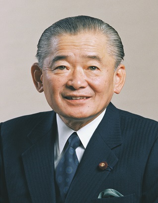
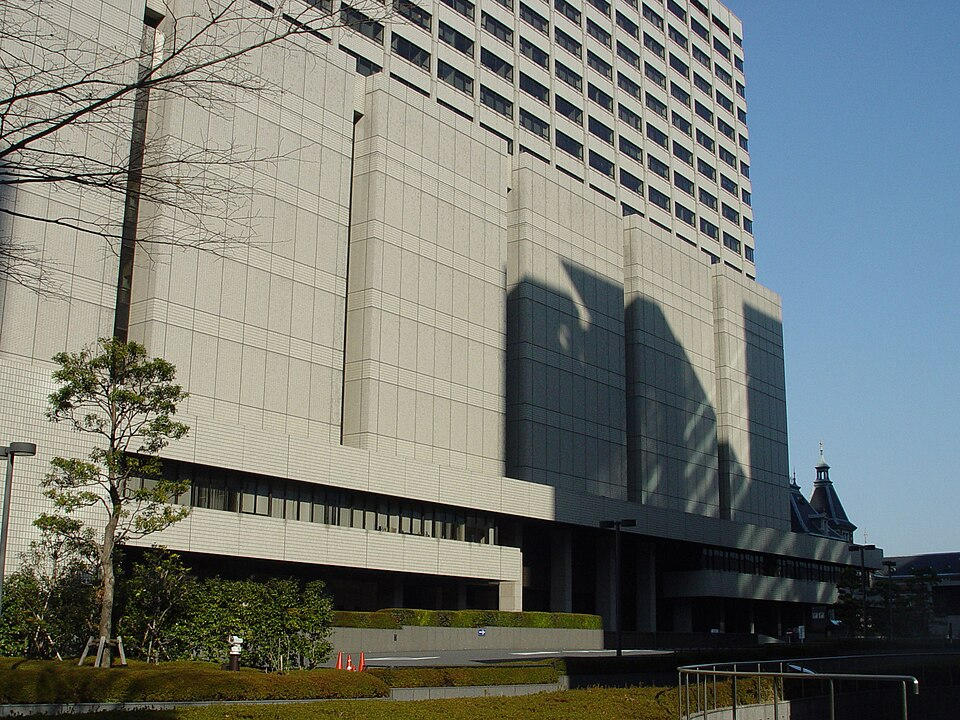
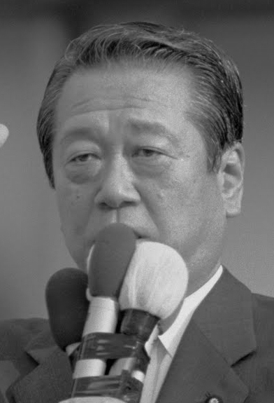

渡
渡邉廣康
わたなべ・ひろやす
東京佐川急便元社長
役割：融資・債務保証を決裁し、金丸信への5億円献金を行った人物
その後：特別背任事件で起訴。最終刑は本調査で未確認6
1970年代後半〜2026年
東京佐川急便の経営陣は、平和堂グループや稲川会元会長・石井進の関連企業などに融資・債務保証を拡大し、株式・不動産投資に関係する回収困難な損失を発生させた。1
1992年2月の強制捜査から、渡邉廣康元社長が金丸信に5億円を渡した政治資金規正法違反が表面化した。金丸は罰金20万円の略式命令を受け、後に脱税事件でも逮捕・起訴された。2
皇民党の竹下登への「ほめ殺し」、稲川会、政治家、運送会社の資金供給が重なり。事件は1992年の国会審議と1994年の政治改革関連4法へ波及した。個々の政治家と暴力団の具体的関係には未確認の部分がある。3

東京佐川急便は佐川急便グループの東京地区会社だった。裁判資料によれば、もともとは渡邉家側の会社として出発したが、佐川清側のグループ再編の中で株式の60％を佐川清側に無償提供し。佐川グループの支配下に入った。その後も渡邉廣康は社長としての地位と実質的経営権を維持しようとした。佐川清側の支配と渡邉元社長の経営権維持の緊張関係が、後の資金供給の判断を判別する前提となる。1
1987年。日本皇民党は竹下登に対して街宣車などを使った「ほめ殺し」攻撃を行った。国会審議や報道では、竹下・金丸側が暴力団関係者や東京佐川急便の渡邉元社長に問題解決を相談したとされる。検察側は後の特別背任事件の公判で、渡邉元社長が稲川会元会長・石井進との関係を深めた背景として皇民党事件を指摘したと報じられている。一方、警察庁は政治家と暴力団との具体的関係、東京佐川急便と皇民党の具体的関係を確認していないと答弁した。確認された事実と報道、未確認事項が同じ人脈の中に並んでいる。2
ところが、同年一〇月、北祥産業が金融機関から融資を受けようとした際、Gの支配下にあることが金融機関側に発覚したために融資を受けることが困難になるという事態が生じた。そこで、昭和六一年二月には、東京佐川急便の系列会社のような外観を呈する会社として北東開発株式会社（以下「北東開発」という。）を設立し、被告人が代表取締役になり、また東京佐川急便の関連会社の役員を登記簿上の役員にするなどして、北祥産業では得にくくなった融資を受けやすくした。 被告人は、北祥産業、北東開発が暴力団稲川会の支配する会社であり、東京佐川急便との関係が深まるのを快く思っていなかったが、Cの意向に従うことにしたものである。
意味：稲川会支配企業との関係を避けたい認識がありながら、東京佐川急便側の意向に従ったという緊張関係を示す。([URL](https://minorusan.net/l/%E6%9D%B1京地方裁判所%20平成４年（特わ）１１１１号・平４年（特わ）４０７号・平４年（特わ）６４５号%20判決))
1989年から1991年にかけて、東京佐川急便は平和堂グループ、石井進の関連企業などへの融資や債務保証を拡大した。警察庁答弁によれば、石井関連企業への貸付・債務保証は約2,500億円で、元利の償還に約1,500億円が充てられ。焦げ付きは約1,000億円だった。平和堂グループについて東京地裁判決は、不動産取引や有価証券取引の失敗で返済能力が危ぶまれ、十分な担保もない相手への保証・貸付を認定した。資金の出し手である東京佐川急便では、渡邉元社長らが重要な判断を担った。3
東京佐川急便の保有株のうち売却が困難な株を別会社に引き取らせ、その会社が保証を使って金融機関から資金を借り、株取引の利益で売却損を補填する構想が示された。判決文には、必要資金500億円を東京佐川急便の保証で借り入れ、別会社名義で株取引を行う合意が記載されている。別会社の借入金は300億円、400億円へ増え、資産総額を上回る状態となり。同年12月には70億円を超える債務超過となった。損失を本業の外へ移す構造は、会社の保証債務を通じて東京佐川急便に戻った。4
1991年にバブル崩壊で株式・不動産の価値が下落し、保証先の返済能力も低下した。佐川グループは東京佐川単独の会社更生手続を検討したが、旧京都佐川側も保証債務を負っていたため、東京佐川を吸収合併して処理する方針へ転じた。1992年5月、東京佐川急便は佐川急便など5社と合併し、新体制で事業を継続した。栗和田榮一は合併後の社長となり、保証債務・不良債権処理を担当した。後年の業界資料は事件関連の不良債権を約6,000億円と表現するが、約5,200億円など別の数字とは対象範囲が異なる。5
1992年2月14日、東京地検特捜部は渡邉廣康元社長らを特別背任容疑で逮捕した。捜査は、東京佐川急便から暴力団系企業や平和堂グループへの資金流出を明らかにする方向へ進んだ。その過程で渡邉元社長から政治家への資金提供が表面化し、1992年8月には金丸信への5億円が大きく報じられた。金丸は上申書で受領を認め、東京地検は略式起訴を選択し、東京簡裁は罰金20万円の略式命令を出した。正式裁判の請求がなく、1992年10月14日に有罪が確定した。6
1993年3月。金丸は東京佐川急便事件の捜査過程で発覚した所得隠し・脱税容疑で逮捕・起訴された。国会答弁は所得隠し総額18億4,800万円、脱税総額約10億4,100万円と説明している。1992年12月には公職選挙法・政治資金規正法の緊急改正と国会議員資産公開法が成立し、1994年には政治改革関連4法が成立した。事件が政治改革要求を加速させたとする資料はあるが、制度改革の全てを東京佐川急便事件だけの結果とは扱えない。旧経営陣全員の刑事判決・確定日、個別の民事請求の全容、皇民党と東京佐川急便の具体的関係は本調査で未確認である。金丸の辞任後、竹下派では小沢一郎を中心とする勢力と小渕恵三を支持する勢力の対立が激化したとされる。政治改革の議論は企業・団体献金の扱い、政党助成、選挙制度。派閥の資金に及んだ。東京佐川急便の事件は政治資金の授受だけでなく、会社の保証債務がグループ全体へ移され、政治家への献金が国会の制度論へ移る過程を含んでいる。旧経営陣全員の判決と確定日、個別の民事請求の全容、政治家と暴力団の具体的関係は。2026年11月15日時点でも本調査で確認できない。金丸の5億円については、受領の事実、上申書、略式起訴、罰金20万円、有罪確定という手続は確認できるが。金銭と具体的な職務行為の対価関係は確認できない。5億円が竹下派議員約60人に配られたとの国会質問上の主張も、全配分先と金額を刑事判決で確認できない。東京佐川急便と皇民党の直接関係についても、警察庁は具体的事実を確認していないと答弁している。さらに、東京佐川急便は1992年5月に佐川急便など5社と合併し、旧経営陣が生じさせた保証債務と不良債権の処理は新体制へ移った。後年の資料には約8,400億円の返済総額や7,250億円をグループ全社の期間収益で賄ったとの記載があるが、企業史料系サイトの記載であり、一次資料による再確認が必要とされている。したがって、事件後の負担の分担についても、確定した判決・処分と報道・未確認情報を区別して記述している。1992年の捜査と国会審議では、金融機関、親会社、政治家。捜査機関がそれぞれ異なる情報を扱った。誰がどの資料をいつ把握していたかは、事件全体の終結年が一義的でないことと同様に、本調査の判決・公的資料の確認範囲では確定できない。7

| 東京佐川急便旧本社付近 | 東京都江東区新砂3丁目1番6号 | 旧本店所在地 | 9 |
| 東京地方裁判所 | 東京都千代田区霞が関1-1-4 | 特別背任事件の第一審裁判所 | 33 |
| 東京簡易裁判所 | 東京都千代田区霞が関1-1-2 | 金丸信の略式命令 | 6 |
| 東京地方検察庁 | 東京都千代田区霞が関1-1-1 | 金丸・東京佐川事件の捜査機関 | 34 |
| 国会議事堂 | 東京都千代田区永田町1-7-1 | 事件の証人喚問・政府答弁・政治改革審議 | 35 |
| パレロワイヤル永田町 | 東京都千代田区永田町2丁目 | 金丸が5億円を受け取った場所として報じられた場所。番地・座標は概略 | 36 |
| 新潟県庁 | 新潟県新潟市中央区新光町4-1 | 金子清元知事の政治資金事件の関係地 | 11 |
| 東京高等・地方・簡易裁判所合同庁舎 | 東京都千代田区霞が関1-1-4 | 判決・裁判手続の場所 | 37 |
確認できる構造は、東京佐川急便が融資・債務保証を行い、受け手が仕手株・不動産投資に資金を使い。返済能力が低下した後も保証と追加貸付が会社損害を拡大させた流れである。別会社を介した株式損失の処理では、東京佐川急便の保証で金融機関から借り入れ、株取引の利益で損失を補填する構想が示された。政治資金の流れでは、渡邉元社長から金丸信へ5億円、金子清へ1億円が渡ったと記録されている。3
わたなべ・ひろやす
東京佐川急便元社長
役割：融資・債務保証を決裁し、金丸信への5億円献金を行った人物
その後：特別背任事件で起訴。最終刑は本調査で未確認6
かねまる・しん
自民党副総裁・竹下派会長
役割：渡邉元社長から5億円を受領した人物
その後：罰金20万円。後に脱税事件で逮捕・起訴6
たけした・のぼる
元首相
役割：皇民党の「ほめ殺し」事件の標的
その後：東京佐川急便との直接の違法献金の刑事認定は未確認2
いしい・すすむ
稲川会元会長
役割：関連企業への約2,500億円規模の貸付・保証が警察庁答弁にある
その後：1991年に稲川会会長を退任・死去2
さがわ・きよし
佐川急便創業者
役割：東京佐川急便のグループ支配に関与
その後：事件後の経営責任・刑事責任の確定内容は未確認1
くりわだ・えいいち
合併後の佐川急便社長
役割：新体制で保証債務・不良債権処理を担当
その後：その後の詳細は本調査で未確認13
かねこ・きよし
元新潟県知事
役割：渡邉元社長から1億円を受領し収支報告書に虚偽記載をしたと判決認定
その後：政治資金規正法違反で有罪判決。量刑の詳細は未確認11
はら・ただし
金丸元議員の秘書
役割：国会証人喚問の対象
その後：具体的刑事責任は未確認21

おざわ・いちろう
竹下派幹部
役割：事件関連で検察事情聴取を受けたと報道・資料にある
その後：東京佐川事件での有罪認定は未確認31
おぶち・けいぞう
竹下派幹部
役割：金丸後継をめぐる派閥内抗争で名前が挙がる
その後：違法行為の刑事認定は未確認38
みやざわ・きいち
首相
役割：事件後の政治改革を進める立場
その後：1994年政治改革関連4法の時期の首相26
まつうら・としなお
衆議院議員
役割：金丸5億円事件の質問主意書提出者
その後：国会で検察処理への疑問を問題化6
ごとうだ・まさはる
法務大臣
役割：国会で皇民党・暴力団関係について答弁対象となった
その後：個別の事件処分は本調査で未確認39
平和堂グループ代表者
役割：東京佐川急便から株式・不動産投資向け融資・保証を受けた
その後：東京地裁で懲役5年。氏名は複数資料で匿名化・表記揺れ3
金子清元知事事件関係者
役割：1992年当時の報道で起訴された人物
その後：役割・最終処分は未確認36
右翼団体
役割：1987年に竹下登への街宣活動による「ほめ殺し」を行った
その後：東京佐川急便との具体的関係は警察庁が未確認と答弁2
相関図は、東京佐川急便の経営権をめぐる関係、融資・保証の資金関係、金丸信への献金、皇民党・稲川会をめぐる報道と公的確認。捜査・国会審議の対立を示す。闇社会・右翼団体との接点は、調査メモの認定・指摘・報道・未確認の区別を維持している。
資金の出し手と受け手。1990年1月中旬、渡邉元社長が金丸に5億円を寄附した。金丸は受領を認め、政治資金規正法違反で罰金20万円となった。6
資金の出し手と受け手。東京佐川急便から石井関連企業へ約2,500億円の融資・保証が行われたと警察庁が答弁し、両者は「極めて密接な関係」と説明された。2
庇護・口利き。皇民党事件の処理をめぐり、竹下・金丸側が渡邉元社長に相談したとの報道がある。具体的な金銭授受の刑事認定は未確認。10
盟友・上司と部下。金丸は竹下派会長として竹下政権を支え、事件後に金丸が辞任したことで派閥後継争いが起きた。22
対立・確執。金丸辞任後の竹下派後継をめぐり、小沢一郎を中心とする勢力と小渕恵三を支持する勢力の対立が激化した。31
派閥内後継。金丸後の竹下派会長選出で小渕を支持する勢力が形成されたとされる。40
対立・確執。佐川清側のグループ支配に対し、渡邉は東京佐川の社長・経営権を維持しようとした。1
姻戚・創業家。栗和田は佐川清の実子で、事件後に合併会社の社長となり再建を担った。41
資金の出し手と受け手。東京佐川は平和堂グループに株式投資・不動産投資向けの融資・保証を行い、裁判所は回収不能リスクが極めて高いと認定した。42
裏切り・共謀。平和堂側への融資・保証について、両者の共謀による特別背任が争われ、平和堂代表者は有罪判決を受けた。43
資金の出し手と受け手。1989年5月10日に1億円を受け取り、政治資金収支報告書に虚偽記載をしたと判決で認定された。11
対立・確執。皇民党が竹下に対して街宣活動による「ほめ殺し」を行った。2
庇護・口利き。竹下側が攻撃停止を望み、金丸・渡邉・石井を含む人脈が問題処理に関与したと報道された。10
対立・確執。金丸は出頭せず上申書を提出し、検察は略式手続を選択した。6
対立・確執。国会は捜査記録の提出を求めたが、政府は司法権の独立を理由に訴訟記録の提出を差し控えると答弁した。25
被告人は、平和堂の名称で宝石ブローカーを行っていた昭和五七年ころにBと知り合い、Bが株や金融ブローカーのような仕事を始めた昭和六〇年一二月ころからは、Bから資金を貸し付けてもらったりするなどして、次第に親しく交際するようになった。被告人は、Bから東京佐川急便の社長であるWの豊かな資金力や人脈の広さ等を聞かされ、ぜひともWと顔見知りになって資金面等で協力を得たいと考えていたところ、昭和六一年秋ころ、Bに連れられて東京佐川急便の社長室へ行き、BからWを紹介してもらってWと面識を持つに至り、その後、頻繁にWのもとに出入りするように心掛けるとともに、Wに会ったときには出来るだけ顔を合わせるなど、Wの歓心を買うように努めた。その結果Wは、被告人に気を許して被告人のことを「Aちゃん」などと親しげに呼ぶようになり、昭和六二年八月には、東京佐川急便から平和堂不動産に対し無担保で一億円の融資、さらに昭和六三年一月には株式投資資金として平和堂不動産に対し無担保で三億円の融資をするように取り計らうまでになった。
意味：裁判所が、資金力・人脈を持つ社長への接近と、親密化の後に無担保融資が拡大した経緯を認定している。([URL](https://minorusan.net/l/%E6%9D%B1%E4%BA%AC%E5%9C%B0%E6%96%B9%E8%A3%81%E5%88%A4%E6%89%80%20%E5%B9%B3%E6%88%90%EF%BC%94%E5%B9%B4%EF%BC%88%E7%89%B9%E3%82%8F%EF%BC%89４０４号%E3%83%BB%E5%B9%B3４年（刑わ）５０６号%20判決))
稲川会元会長・石井進の関連企業への約2,500億円の貸付・保証、平和堂グループの仕手株投資、皇民党の街宣活動。政治家側が渡邉元社長へ相談したとの報道が記録されている。一方、東京佐川急便と皇民党、政治家と暴力団の具体的関係は警察庁が確認していないと答弁している。
稲川会、石井進、東京佐川急便 指摘
東京佐川急便。稲川会 指摘
日本皇民党、竹下登 認定
竹下登、金丸信、渡邉廣康 報道
石井進関連企業、相互銀行 指摘
平和堂グループ。東京佐川急便 認定
金丸信、渡邉廣康 認定
金子清。渡邉廣康 認定
金丸信、竹下派議員 指摘
東京佐川急便、日本皇民党 確認できない
ところが、同年一〇月、北祥産業が金融機関から融資を受けようとした際、Gの支配下にあることが金融機関側に発覚したために融資を受けることが困難になるという事態が生じた。そこで、昭和六一年二月には、東京佐川急便の系列会社のような外観を呈する会社として北東開発株式会社（以下「北東開発」という。）を設立し、被告人が代表取締役になり、また東京佐川急便の関連会社の役員を登記簿上の役員にするなどして、北祥産業では得にくくなった融資を受けやすくした。 被告人は、北祥産業、北東開発が暴力団稲川会の支配する会社であり、東京佐川急便との関係が深まるのを快く思っていなかったが、Cの意向に従うことにしたものである。
意味：稲川会支配企業との関係を避けたい認識がありながら、東京佐川急便側の意向に従ったという緊張関係を示す。([URL](https://minorusan.net/l/%E6%9D%B1京地方裁判所%20平成４年（特わ）１１１１号・平４年（特わ）４０７号・平４年（特わ）６４５号%20判決))
| 渡邉廣康 | 0億円 | 0億円 | 経営権維持や政治家・有力者との関係を得たとされる一方、特別背任事件の被告となった。金額は未確認。 | 14 |
| 石井進・関連企業 | 2500億円 | 1000億円 | 東京佐川急便の保証を利用した資金調達。焦げ付き約1,000億円。 | 2 |
| 平和堂グループ | 60億円 | 0億円 | 無担保貸付などで株式・不動産投資資金を得たが、投資失敗と刑事責任に至った。 | 3 |
| 金丸信 | 5億円 | 0億円 | 5億円を受領したが、罰金20万円、政治的地位の辞任。後の脱税事件が記録されている。 | 6 |
| 佐川急便グループ | 0億円 | 6000億円 | 東京佐川の保証債務・不良債権を引継いだ。後年資料の事件関連規模は約6,000億円。 | 17 |
| 株主・債権者 | 0億円 | 5200億円 | 回収不能となった融資・保証による損失を負担したとする資料がある。 | 46 |
| 東京地検 | 1992-09-28 | 略式起訴 |
| 東京簡裁 | 1992-09-29 | 罰金20万円の略式命令。10月14日に有罪確定 |
政治資金規正法違反。確認済み6
| 新潟地裁 | 未確認 | 有罪判決。量刑の詳細は未確認 |
政治資金規正法違反・収支報告書虚偽記載等。一部確認済み11
| 東京地裁 | 1993-12-09 | 懲役5年。未決勾留日数80日を算入 |
商法違反・特別背任等。控訴審・上告審の確定内容は未確認3
| 東京地検特捜部 | 1992-02-14 | 渡邉元社長らを逮捕。全被告の判決と確定日は未確認 |
特別背任。未確認20
| 東京地検 | 1993-03 | 逮捕・起訴。刑の確定内容は未確認 |
所得隠し・脱税。未確認29
| 裁判所公開判例 | 未確認 | 事件発覚後の保証債務整理・合併を扱う後続判決 |
保証債務整理・合併後の損害処理。個別の損害賠償請求・債権回収訴訟の全容は未確認5
| 国会 | 1992-12-10 | 公選法・政治資金規正法の緊急改正、国会議員資産公開法が成立 |
| 国会 | 1994-03-04 | 政治改革関連4法が成立 |
渡邉廣康・東京佐川急便元社長から金丸信前衆議院議員への五億円献金に係る政治資金規正法違反事件は、去る九月二十五日、金丸氏が上申書を東京地検に提出、これを受けて、九月二十八日、東京地検が略式起訴を行い、翌九月二十九日、東京簡裁が罰金二十万円の略式命令を出したが、検察、金丸氏の双方より十月十三日までに正式裁判の請求がなかったため、十月十四日、金丸氏の有罪が確定したところである。 しかし、本事件の捜査、処理にあたった検察の姿勢に対しては国民世論は言うに及ばず、札幌高検検事長をはじめとして、検察内部からも批判と疑問の声が公然と上がっている状況である。
意味：5億円受領から略式命令・有罪確定までの手続と、検察の処理への批判を、質問者がどのように問題化したかが分かる。([URL](https://www.shugiin.go.jp/internet/itdb_shitsumona.nsf/html/shitsumon/a125003.htm))
金丸信前衆議院議員（以下「金丸前議員」という。）に対する政治資金規正法（昭和二十三年法律第百九十四号）違反事件（以下「本件」という。）については、検察当局において、東京佐川急便株式会社元代表取締役渡邉廣康（以下「渡邉元社長」という。）らに対する一連の特別背任事件の捜査の過程で、渡邉元社長から金丸前議員に対し五億円の献金がなされた事実を把握し、その真相を解明するため、金丸前議員の秘書ら関係者多数の取調べを行うなど、必要な捜査を進めるとともに、金丸前議員に対して出頭の上取調べに応ずるよう求めたところ、金丸前議員から、同法第二十二条の二第三項に違反して寄附を受けたことを認める上申書が提出され、それまでに収集した証拠と併せると、違反の事実を認定するに十分であると思料されたことから、略式手続によることについて異議のない旨の書面を徴した上、罰則（同法第二十六条第二号）の法定刑の枠内で、平成四年九月二十八日、東京簡易裁判所に公訴を提起し略式命令を請求したものである。
意味：政府答弁書が、5億円の授受や金丸の上申書と関係者取調べ及び略式手続の根拠を公式に説明している。([URL](https://www.shugiin.go.jp/internet/itdb_shitsumona.nsf/html/shitsumon/b125003.htm))
被告人は、平和堂の名称で宝石ブローカーを行っていた昭和五七年ころにBと知り合い、Bが株や金融ブローカーのような仕事を始めた昭和六〇年一二月ころからは、Bから資金を貸し付けてもらったりするなどして、次第に親しく交際するようになった。被告人は、Bから東京佐川急便の社長であるWの豊かな資金力や人脈の広さ等を聞かされ、ぜひともWと顔見知りになって資金面等で協力を得たいと考えていたところ、昭和六一年秋ころ、Bに連れられて東京佐川急便の社長室へ行き、BからWを紹介してもらってWと面識を持つに至り、その後、頻繁にWのもとに出入りするように心掛けるとともに、Wに会ったときには出来るだけ顔を合わせるなど、Wの歓心を買うように努めた。その結果Wは、被告人に気を許して被告人のことを「Aちゃん」などと親しげに呼ぶようになり、昭和六二年八月には、東京佐川急便から平和堂不動産に対し無担保で一億円の融資、さらに昭和六三年一月には株式投資資金として平和堂不動産に対し無担保で三億円の融資をするように取り計らうまでになった。
意味：裁判所が、資金力・人脈を持つ社長への接近と、親密化の後に無担保融資が拡大した経緯を認定している。([URL](https://minorusan.net/l/%E6%9D%B1%E4%BA%AC%E5%9C%B0%E6%96%B9%E8%A3%81%E5%88%A4%E6%89%80%20%E5%B9%B3%E6%88%90%EF%BC%94%E5%B9%B4%EF%BC%88%E7%89%B9%E3%82%8F%EF%BC%89４０４号%E3%83%BB%E5%B9%B3４年（刑わ）５０６号%20判決))
別表(1)記載のとおり、平成元年一二月二二日から平成三年二月二八日までの間、八回にわたり、東京佐川急便において、前記平和堂不動産等四社及び被告人が、不動産取引及び有価証券取引の失敗によって多額の債務を抱えていて返済能力が危ぶまれ、十分な担保も供されていないことから、右四社の債務を保証すれば、早晩、債務の履行を求められる状況にあることを熟知しながら、右四社の株式会社東京銀行外六社に対する総額一五一億円及び二四〇〇万ドルの債務を同表連帯保証債務額欄記載のとおり連帯して保証し、もって、東京佐川急便に対し右同額の損害を加え、 別表(2)記載のとおり、平成二年一月二二日から平成三年三月一日までの間、五回にわたり、東京佐川急便において、平和堂不動産、ギャラリー平和堂及び被告人に対し、右二社及び被告人が不動産取引及び有価証券取引の失敗によって多額の債務を抱え、右の者らに貸付をすれば、その貸付金の回収が危ぶまれる状態にあることを熟知しながら、何ら担保を徴することなく、合計六〇億円を貸付け、もって、東京佐川急便に対し右同額の損害を加えたものである。
意味：危険性と返済不能の認識、無担保保証・貸付の反復、会社損害の金額を判決が具体的に示している。([URL](https://minorusan.net/l/%E6%9D%B1%E4%BA%AC地方裁判所%20平成４年（特わ）４０４号・平４年（刑わ）５０６号%20判決))
そこで、Bは、平成元年一月下旬ないし二月上旬ころ、被告人に対し、東京佐川急便が保有している株のうち、売却が困難な株約二〇〇億円分を別会社に引き取らせる、その株は時期を見て売却していくが、売却損の発生が予想されるので別に二〇〇億円を株取引で運用してその利益で補填していく、更に、リバスター音産に発生している株取引の売却損及び評価損を解消する目的で一〇〇億円を株取引で運用する、株取引はBが担当する、必要な資金五〇〇億円は東京佐川急便の保証で金融機関から借り入れる旨の提案をした。被告人は、東京佐川急便における株取引の実態が右のようなものであることを充分に認識しており、前記のような責任問題を発生させないためにはこのような方法をとるしかないと考え、更に、株取引がうまくいって東京佐川急便から引き取る株の売却損並びにリバスター音産の売却損及び評価損を解消することを期待して、これを受け入れ、Bに市原観光開発をそのための別会社として提案した。そして、ここに、被告人、B間に、東京佐川急便の保証で市原観光開発が金融機関から資金を借り入れて、市原観光開発が東京佐川急便から売却が困難な株を引き取った上、残りの資金でBが市原観光開発の名義で株取引を行う旨の合意が成立した。
意味：売却困難株の損失処理を別会社と保証で包み、さらに株取引で補填しようとした構図が、裁判所の認定文に現れている。([URL](https://minorusan.net/l/%E6%9D%B1京地方裁判所%20平成４年（特わ）１１１１号・平４年（特わ）４０７号・平４年（特わ）６４５号%20判決))
市原観光開発の平成元年三月の決算期では、株取引による売却益を約一億六〇〇〇万円計上しているが、株取引関係では金融機関からの借入金が三〇〇億円であるのに、保有する株を含めて資産の総額は約二八七億円しかなかった。また、平成元年九月三〇日現在では、株取引関係では金融機関から借入金が四〇〇億円であるのに保有する株を含めて資産の総額は約三三一億円に減少していた。そして、市原観光開発における株取引は、その後も損を重ねていき、同年一二月には七〇億円を超える債務超過の状態にあった。
意味：利益計上の外観に対し、借入金が資産を上回り、短期間で債務超過が拡大した実態を示す。([URL](https://minorusan.net/l/%E6%9D%B1京地方裁判所%20平成４年（特わ）１１１１号・平４年（特わ）４０７号・平４年（特わ）６４５号%20判決))
被告人は、前記のとおり、株式会社である東京佐川急便の常務取締役として、同社の経理業務全般を統括し、貸付けや債務保証を行う権限を有するものであったが、右のような状況下において、債務超過の状態にあるリバスター音産で新たな株取引を行うことが損害の発生拡大につながるおそれがある以上、同社に株取引資金を貸し付けることを差し控え、東京佐川急便に損害を負わせることにならないように業務を遂行すべき取締役としての任務を負っていた。 それにもかかわらず、被告人は、Bと共謀の上、被告人やCの前記のような利益を図る目的をもって、被告人の株式会社の取締役としての右任務に背き、平成元年一二月二九日、東京佐川急便本社において、前記のような状況を共々認識しながら、担保もとらず、従来の株取引におけるような損失発生を繰り返さないための特段の措置を新たに講ずることもないまま、被告人において、東京佐川急便代表取締役C名義の記名押印をした一部利息を天引きした後の金額である額面合計一四九億八七九七万九四五三円の小切手五通を作成して、一五〇億円をリバスター音産に貸し付け、東京佐川急便に対し同額の損害を負わせた。
意味：取締役の職務上の義務と、それに反する無担保・巨額貸付を、裁判所が対比している。([URL](https://minorusan.net/l/%E6%9D%B1京地方裁判所%20平成４年（特わ）１１１１号・平４年（特わ）４０７号・平４年（特わ）６４５号%20判決))
ところが、同年一〇月、北祥産業が金融機関から融資を受けようとした際、Gの支配下にあることが金融機関側に発覚したために融資を受けることが困難になるという事態が生じた。そこで、昭和六一年二月には、東京佐川急便の系列会社のような外観を呈する会社として北東開発株式会社（以下「北東開発」という。）を設立し、被告人が代表取締役になり、また東京佐川急便の関連会社の役員を登記簿上の役員にするなどして、北祥産業では得にくくなった融資を受けやすくした。 被告人は、北祥産業、北東開発が暴力団稲川会の支配する会社であり、東京佐川急便との関係が深まるのを快く思っていなかったが、Cの意向に従うことにしたものである。
意味：稲川会支配企業との関係を避けたい認識がありながら、東京佐川急便側の意向に従ったという緊張関係を示す。([URL](https://minorusan.net/l/%E6%9D%B1京地方裁判所%20平成４年（特わ）１１１１号・平４年（特わ）４０７号・平４年（特わ）６４５号%20判決))
昨年来の佐川急便事件、さかのぼればロッキード事件、リクルート事件と相次ぐ政治腐敗のスキャンダルに加えて、金丸自民党前副総裁の巨額蓄財・脱税事件の発覚は、国民の政治に対する不信を極限にまで高めており、もはや一刻の猶予もできない事態に立ち至っております。したがって、この議会制民主主義の復権のためには、政治腐敗行為防止のための法案とともに、政党中心・政策本位の選挙を実現するための法改正が不可欠であります。
意味：事件が、国会で政治改革を急ぐ直接の政治的背景として語られた記録である。([URL](https://kokkai.ndl.go.jp/simple/detail?minId=112605254X01919930413&spkNum=4))
しかし、今回は、社公の案も自民党の案も、できるだけ格差を二対一に近づけようという努力の中に抜本的定数是正をやろうとしておるのでありますから、本来、定数是正と言われるのなら、共産党さんもそれにのられるべきだと私は思うのでございます。まことに支離滅裂、意味不明快、こう申さなければならないというふうに考えるわけでございます。（拍手） なお、この点もひとつ申し上げさせていただきたいと思います。 前回、共産党は中選挙区全区で立候補をされております。これは非常に御努力の跡が見えますが、当選者十六人、その中で上位に当選されておりますのは、不破委員長と沖縄だけでございまして、あとの十四名はほとんどすれすれの滑り込みでございます。
意味：この発言は事件の事実認定ではなく、同日の政治改革審議の一部であり、東京佐川事件そのものの追及発言としては採用価値が限定的である。([URL](https://kokkai.ndl.go.jp/simple/detail?minId=112605254X01919930413&spkNum=4))
企業・団体献金の対象・上限・報告を厳格化する方向の改革が行われた。26
国会議員の資産を公開する制度が成立した。22
政治改革関連4法の一部として制定され、企業・団体献金規制と政党交付金を組み合わせる制度となった。7
中選挙区制から小選挙区比例代表並立制への移行につながった。東京佐川事件だけでなく、政治改革論などが複合した。26
警察・企業双方で暴力団関係企業への融資・保証を問題視する慣行が強まった。直接の制度改正との因果関係は未確認。2
検察・政府答弁：金丸が受領を認める上申書を提出し、政治資金規正法違反の事実認定に十分だったため、略式手続を選択した。25
国会・世論：5億円という巨額に対する罰金20万円の略式処分は軽すぎるとの批判が出た。6
確定した刑事評価：金丸について確定したのは政治資金規正法違反であり、贈収賄罪ではない。25
未確認の争点：金銭と具体的な職務行為の対価関係が刑事裁判で認定されたかは未確認である。25
被告側の位置づけ：全面的な反論内容は判決全文の確認範囲を超えるため、本調査では確定できない。3
東京地裁判決：投資先の経営破綻状況や回収可能性を踏まえ、融資・保証が取締役の任務に違背すると認定した。3
報道・検察側主張：竹下・金丸側が渡邉元社長へ相談したことや、渡邉元社長と石井進の関係が示されたと報じられた。10
警察庁答弁：政治家と暴力団、東京佐川と皇民党の具体的関係を確認していないと答弁した。2